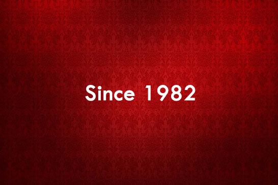

<!DOCTYPE HTML>
<html lang="en">
<head>
</head>
<body id="page1"></body>
</html>
<meta http-equiv="Content-Type" content="text/html; charset=utf-8">
<link href="images" rel="shortcut icon" />
<title>Welcome || M N Pickle Industries</title>
<meta name="description" content="Founded by Sri Masur Narayanappa (MN) in the year 1982 with a great vision to reach the people of India with various mouth watering, lip smacking pickles. Now reached its best! we are a household name in various 74+ food products."><meta name="keywords" content="mnpickles, m n pickles, m n pickle industries, mn pickle paradise, Khao Ek Baar, Maango Baar Baar, delight to tastebuds, delicious, indian, south indian, healthy, awesome, tasty, pickles, thokku, paste, masala powder, papad, fryum, ready mix, herbal beverage powder,chutney">
<link href="css/reset.css" media="all" rel="stylesheet" type="text/css" />
<link href="css/layout.css" media="all" rel="stylesheet" type="text/css" />
<link href="css/style.css" media="all" rel="stylesheet" type="text/css" /><script type="text/javascript" src="js/jquery-1.6.js" ></script><script type="text/javascript" src="js/cufon-yui.js"></script><script type="text/javascript" src="js/cufon-replace.js"></script><script type="text/javascript" src="js/Forum_400.font.js"></script><script type="text/javascript" src="js/jquery.easing.1.3.js"></script><script type="text/javascript" src="js/tms-0.3.js"></script><script type="text/javascript" src="js/tms_presets.js"></script><script type="text/javascript" src="js/script.js"></script><script type="text/javascript" src="js/atooltip.jquery.js"></script><!--[if lt IE 9]>
	<script type="text/javascript" src="js/html5.js"></script>
	<style type="text/css">
		.slider_bg {behavior:url(js/PIE.htc)}
	</style>
<![endif]--><!--[if lt IE 7]>
	<div style='clear:both;text-align:center;position:relative'>
		<a href="http://www.microsoft.com/windows/internet-explorer/default.aspx?ocid=ie6_countdown_bannercode"></a>
	</div>
<![endif]--><!-- Start visualslideshow.com HEAD section -->
<link href="css/slideshow.css" media="screen" rel="stylesheet" type="text/css" />
<style type="text/css">.slideshow a#vlb{display:none}
</style>
<script type="text/javascript" src="js/mootools.js"></script><script type="text/javascript" src="js/visualslideshow.js"></script><!-- End visualslideshow.com HEAD section --><script type="text/javascript">

  var _gaq = _gaq || [];
  _gaq.push(['_setAccount', 'UA-31449354-1']);
  _gaq.push(['_setDomainName', 'mnpickles.in']);
  _gaq.push(['_trackPageview']);

  (function() {
    var ga = document.createElement('script'); ga.type = 'text/javascript'; ga.async = true;
    ga.src = ('https:' == document.location.protocol ? 'https://ssl' : 'http://www') + '.google-analytics.com/ga.js';
    var s = document.getElementsByTagName('script')[0]; s.parentNode.insertBefore(ga, s);
  })();

</script>
<div class="body6">
<div class="body1">
<div class="body5">
<div class="main"><!-- header -->
<header>
<h1><a href="home.html" id="logo" title="mnpilogo">M N Pickle Industries</a></h1>

<nav>
<ul id="top_nav">
	<li><a href="http://www.facebook.com/mnpickles" target="_blank"></a></li>
	<li><a href="http://twitter.com/#!/mnpicklesind" target="_blank"></a></li>
	<li class="end"><a href="http://plus.google.com/103910433719513098738" target="_blank"></a></li>
</ul>
</nav>

<nav>
<ul id="menu">
	<li class="active"><a href="intro.html">Intro</a></li>
	<li><a href="home.html">Home</a></li>
	<li><a href="about.html">About Us</a></li>
	<li><a href="products.html">Products</a></li>
	<li><a href="contact.html">Contact</a></li>
</ul>
</nav>
</header>

<div class="ic"></div>
<!-- / header --><!-- content --><br />
<!-- Start visualslideshow.com BODY section -->
<div class="slideshow" id="show">
<div class="slideshow-images"><a href=""></a> <a href=""></a> <a href=""></a> <a href=""></a> <a href=""></a> <a href=""></a></div>
</div>

<p align="center"></p>

<nav>
<p></p>

<p></p>

<ul id="menu">
	<li></li>
	<li><a href="home.html">Jump to Home Page</a></li>
</ul>
</nav>
</div>

<p></p>

<p></p>

<p></p>
</div>
<!-- End visualslideshow.com BODY section --></div>

<div class="body2">
<div class="main"><!-- / content --></div>
</div>

<div class="body3">
<div class="body4">
<div class="main"><!-- footer -->
<footer>
<div class="wrapper">&nbsp;
<section class="col1 pad_left1">&copy;<strong> 2021 M N Pickle Industries. All products are 100% vegetarian.</strong> <br />
Best viewed through a latest version <a href="http://www.mozilla.org" target="_blank" title="Mozilla Firefox">browser</a>, with screen resolution<br />
1024 X 768 and higher. Socialize, links at top-right corner of this page.
<div>Share in <script type="text/javascript">var switchTo5x=false;</script><script type="text/javascript" src="http://w.sharethis.com/button/buttons.js"></script><script type="text/javascript">stLight.options({publisher:'f386d7b3-b110-4e09-8257-028407dd07ea'});</script><script type="text/javascript" src="https://apis.google.com/js/plusone.js"></script>
<div class="g-plusone" data-annotation="none" data-href="http://mnpickles.in"></div>
</div>
</section>

<section class="col2 pad_left1"><a href="http://www.vjdilip.in" target="_blank" title="www.vjdilip.in"></a></section>
</div>
<!-- {%FOOTER_LINK} --></footer>
<!-- / footer --></div>
</div>
</div>
<script type="text/javascript"> Cufon.now(); </script></div>